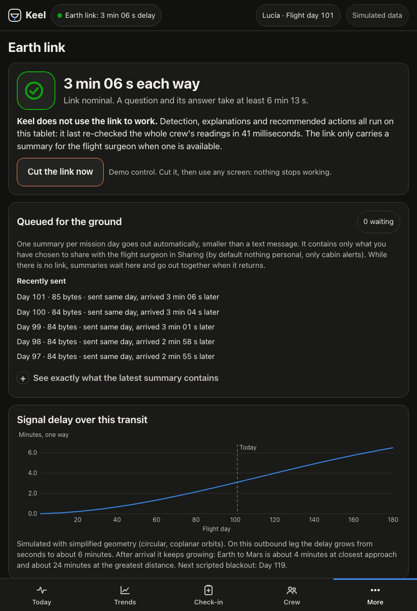
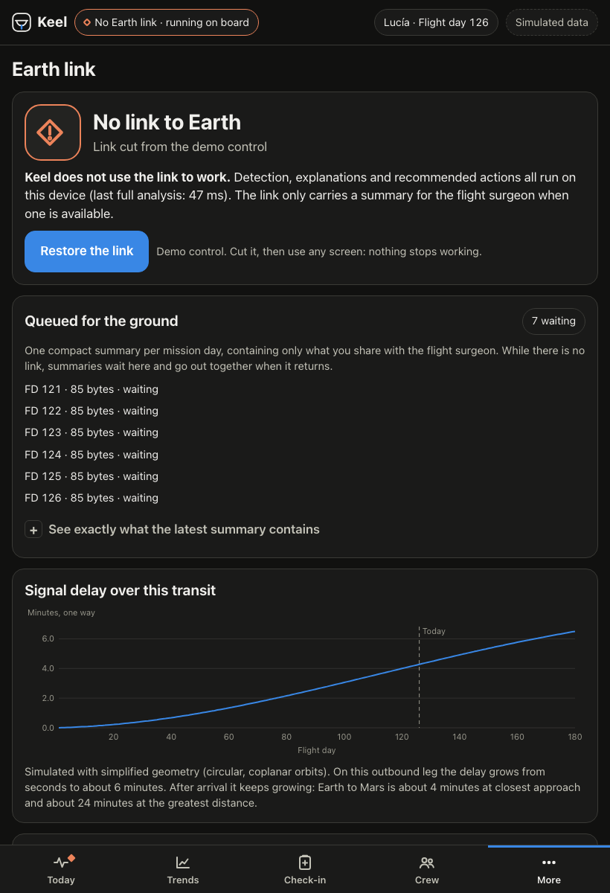
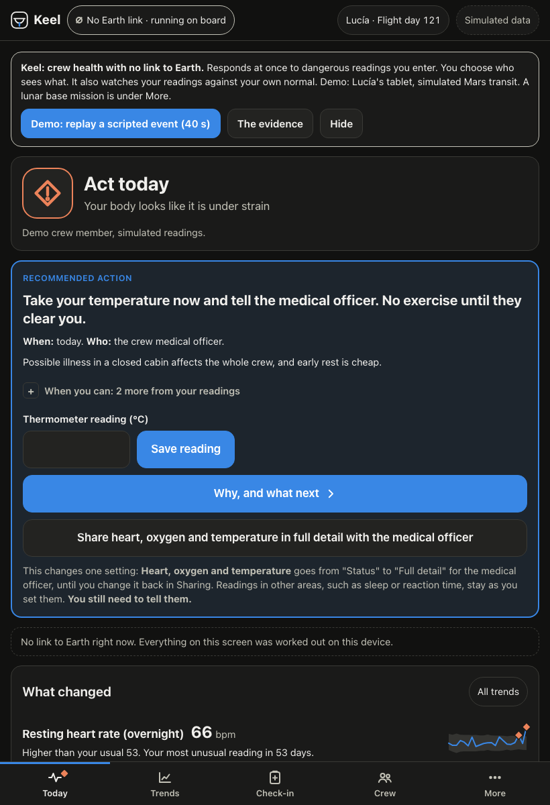
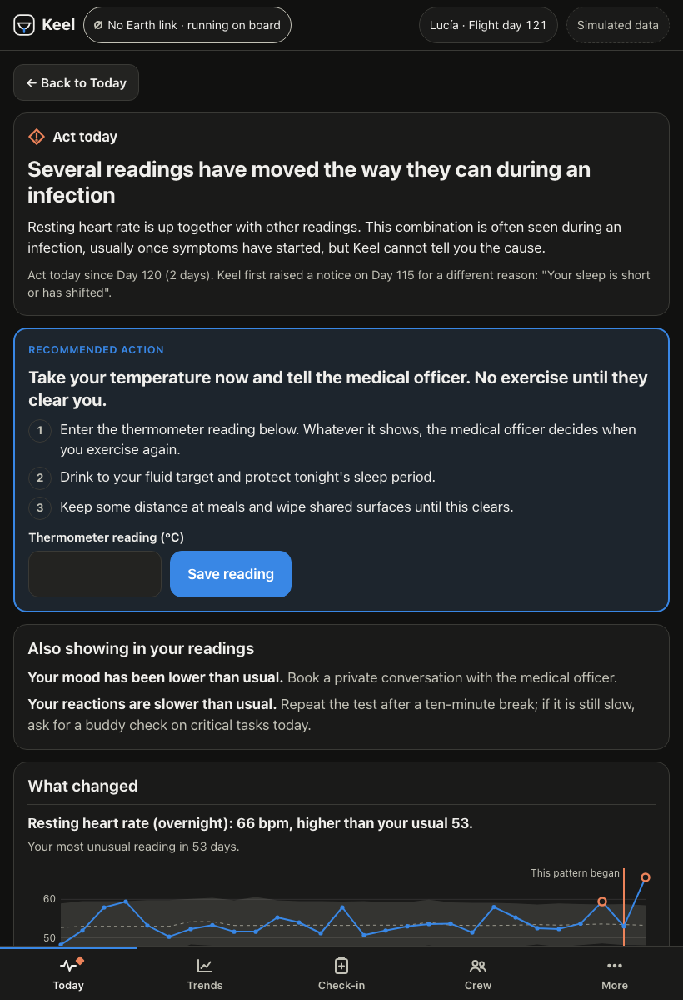
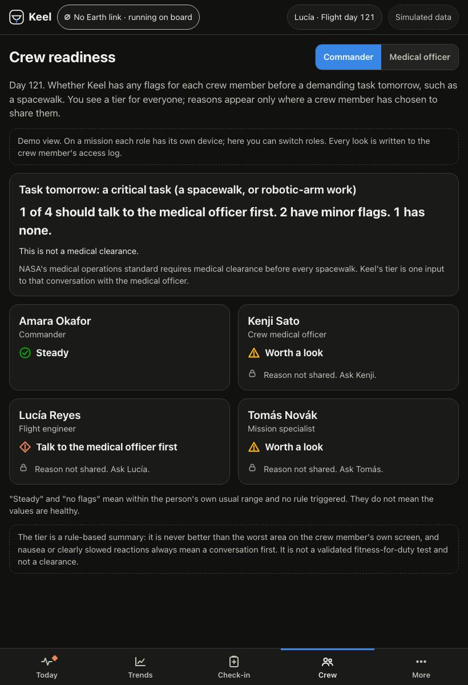
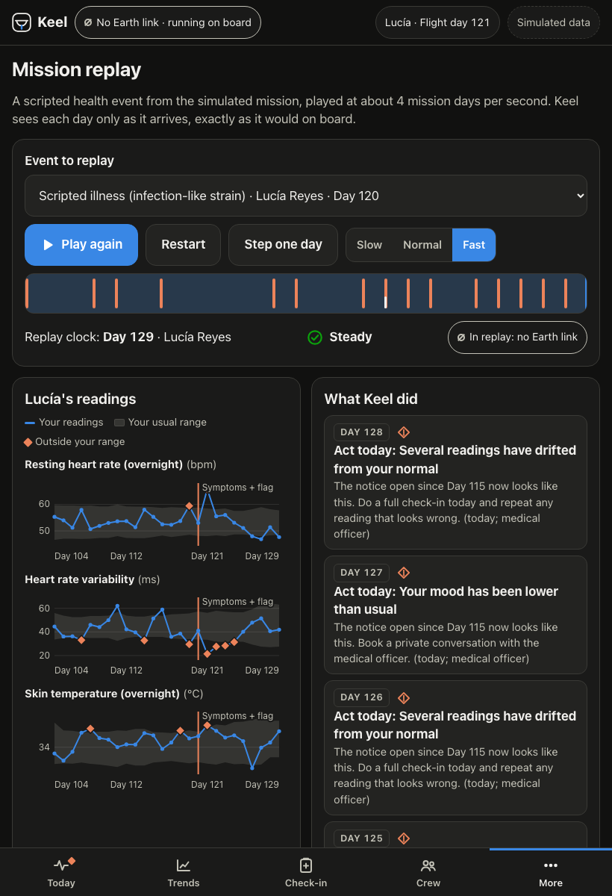

Simulated mission data



points above luck at flagging real illness: Keel's method, on two sensors, with thresholds set only in simulation (95% interval 18 to 37). Flagged 68%; luck alone gives 41%. Stricter alert tier: +24 (14 to 34).
false alerts per person-month at that result, against a budget of 1.00. Alert tier: 0.41 against 0.25. Both run over budget.
lead over one threshold for everyone (interval −3 to 25): Keel now runs the simple personal 2-of-3 rule, so this is the like-for-like contrast (same rule, personal against population baseline); +17 (7 to 28) at the alert tier: mixed. The multivariate detector, once a review corrected it, no longer beat the simple rule by our pre-set margin on simulated training missions.
NASA bed-rest data: after volunteers get up, a plain baseline flags 9 of 14; a pulse-only rule with transition handling flags 4 (not significant, p = 0.06; its chance level was not measured). Simulated missions, full sensor set: 71% flagged against 41% by luck.
What we cannot claim: useful early warning; at the tier that brings in the medical officer, alerts start before symptoms not measurably more often than luck. Most alerts are false: between 1 in 13 and 1 in 22 alert-tier alerts would be a real illness. The model file the app ships is tuned for eleven on-board channels; on a watch import it is +16 above luck, and per-sensor-set thresholds are not built. Much of the signal is people moving less when ill; heart rate alone is +19. The data is from people on Earth. No clinician has reviewed anything. Everything beyond illness is tested in simulation.
Keel — a crew health monitor that keeps working when Earth cannot answer.
Independent student project for the 2026 NASA Space Apps Challenge. Not a NASA product. Decision support, not a medical device.
